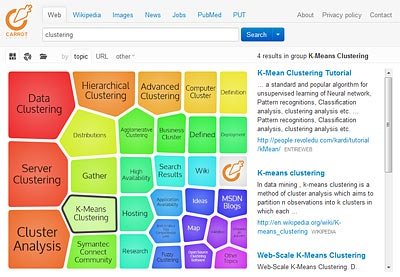

DCS comes with a simple  client-side search application.
If you'd like to use the search application in a production environment, it is recommended to deploy the DCS in the search application mode. In such a configuration, the quick-start front-end you are seeing now will be disabled and the search application will become the default front-end served from the root URI.
To start the DCS in the search application mode:
--search-application option